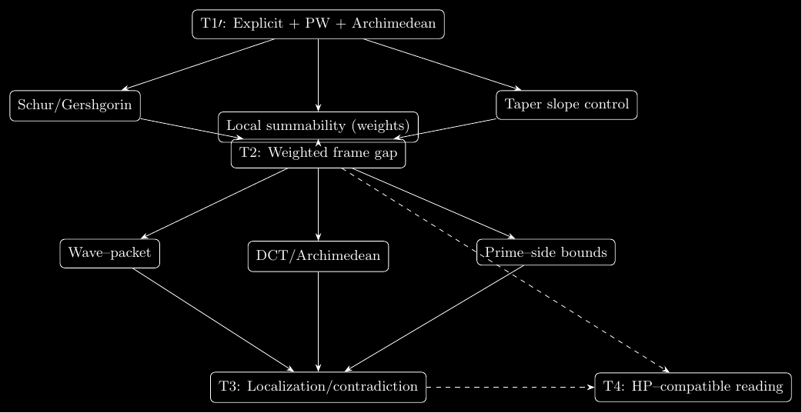
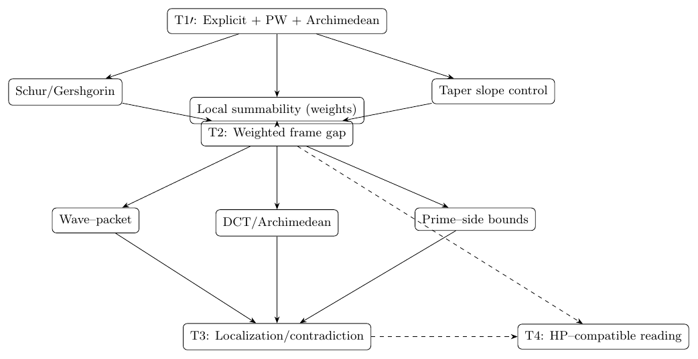
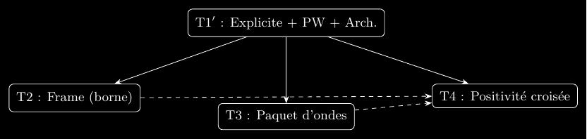
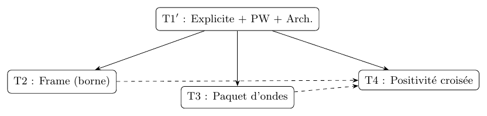
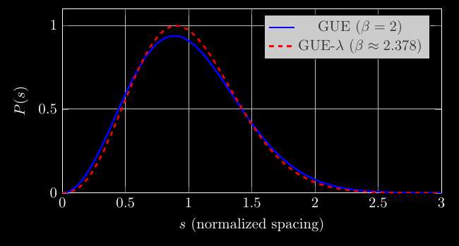
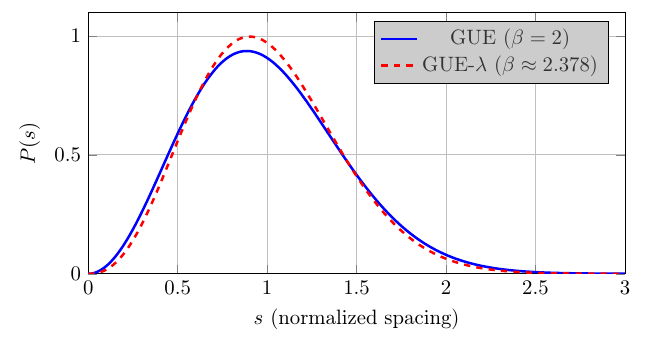
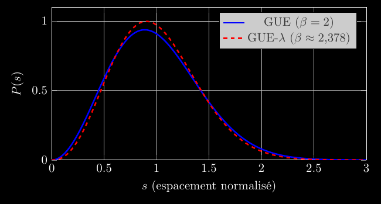
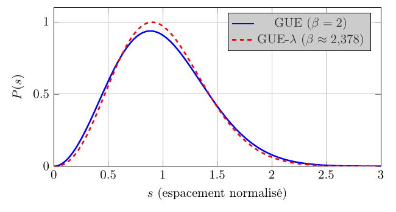

InterIA — Analytic Framework (T1′–T4) v1.0.0
InterIA — Analytic Framework (T1′–T4) v1.0.0
Proof-only · journal-ready · arXiv-compatible
“From analysis to clarity: a proof of the framework — not of Riemann.”
📄 Papers & Guides

⬇️ Artifacts
🖼️ Proof Gallery


Journal — EN
Dependency map for T1′–T4


Journal — FR
Carte de dépendances du schéma T1′ –T4


Audit λ(Couret) — EN
GUE vs GUE-λ • NNSD • Δ₃


Audit λ(Couret) — FR
GUE vs GUE-λ • NNSD • Δ₃
Audit λ(Couret) — EN (light)
GUE vs GUE-λ • NNSD • Δ₃
Audit λ(Couret) — FR (light)
GUE vs GUE-λ • NNSD • Δ₃
math.NT
random-matrix-theory
spectral-form-factor
wave-packets